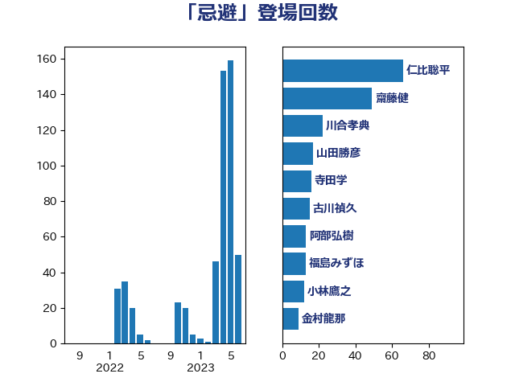

単語「忌避」

| 仁比聡平 | 日本共産党 | 66 回 |
| 齋藤健 | 自由民主党 | 49 回 |
| 川合孝典 | 国民民主党 | 22 回 |
| 山田勝彦 | 立憲民主党 | 17 回 |
| 寺田学 | 立憲民主党 | 16 回 |
| 古川禎久 | 自由民主党 | 15 回 |
| 阿部弘樹 | 日本維新の会 | 13 回 |
| 福島みずほ | 社会民主党 | 13 回 |
| 小林鷹之 | 自由民主党 | 12 回 |
| 金村龍那 | 日本維新の会 | 9 回 |
| 石川大我 | 立憲民主党 | 9 回 |
| 加田裕之 | 自由民主党 | 9 回 |
| 谷合正明 | 公明党 | 8 回 |
| 葉梨康弘 | 自由民主党 | 8 回 |
| 大口善徳 | 公明党 | 8 回 |
| 牧山ひろえ | 立憲民主党 | 7 回 |
| 梅村みずほ | 日本維新の会 | 7 回 |
| 音喜多駿 | 日本維新の会 | 6 回 |
| 鈴木義弘 | 国民民主党 | 6 回 |
| 熊田裕通 | 自由民主党 | 6 回 |
| 早稲田ゆき | 立憲民主党 | 6 回 |
| 山井和則 | 立憲民主党 | 6 回 |
| 林芳正 | 自由民主党 | 5 回 |
| 本村伸子 | 日本共産党 | 5 回 |
| 日下正喜 | 公明党 | 4 回 |
| 岸田文雄 | 自由民主党 | 4 回 |
| 鎌田さゆり | 立憲民主党 | 3 回 |
| 藤原崇 | 自由民主党 | 3 回 |
| 福岡資麿 | 自由民主党 | 3 回 |
| 田中昌史 | 自由民主党 | 3 回 |
| 柚木道義 | 立憲民主党 | 3 回 |
| 斎藤アレックス | 国民民主党 | 3 回 |
| 階猛 | 立憲民主党 | 2 回 |
| 重徳和彦 | 立憲民主党 | 2 回 |
| 石橋通宏 | 立憲民主党 | 2 回 |
| 田村智子 | 日本共産党 | 2 回 |
| 田所嘉徳 | 自由民主党 | 2 回 |
| 沢田良 | 日本維新の会 | 2 回 |
| 柳ヶ瀬裕文 | 日本維新の会 | 2 回 |
| 東徹 | 日本維新の会 | 2 回 |
| 吉田はるみ | 立憲民主党 | 2 回 |
| 高橋光男 | 公明党 | 1 回 |
| 馬場伸幸 | 日本維新の会 | 1 回 |
| 青柳仁士 | 日本維新の会 | 1 回 |
| 阿部司 | 日本維新の会 | 1 回 |
| 門山宏哲 | 自由民主党 | 1 回 |
| 赤池誠章 | 自由民主党 | 1 回 |
| 谷川とむ | 自由民主党 | 1 回 |
| 藤田文武 | 日本維新の会 | 1 回 |
| 藤井比早之 | 自由民主党 | 1 回 |
| 萩生田光一 | 自由民主党 | 1 回 |
| 若宮健嗣 | 自由民主党 | 1 回 |
| 美延映夫 | 日本維新の会 | 1 回 |
| 松本尚 | 自由民主党 | 1 回 |
| 有村治子 | 自由民主党 | 1 回 |
| 打越さく良 | 立憲民主党 | 1 回 |
| 後藤茂之 | 自由民主党 | 1 回 |
| 川田龍平 | 立憲民主党 | 1 回 |
| 岡本あき子 | 立憲民主党 | 1 回 |
| 山添拓 | 日本共産党 | 1 回 |
| 山本博司 | 公明党 | 1 回 |
| 山口壯 | 自由民主党 | 1 回 |
| 小野泰輔 | 日本維新の会 | 1 回 |
| 小沢雅仁 | 立憲民主党 | 1 回 |
| 宮崎政久 | 自由民主党 | 1 回 |
| 安江伸夫 | 公明党 | 1 回 |
| 堀内詔子 | 自由民主党 | 1 回 |
| 城井崇 | 立憲民主党 | 1 回 |
| 土田慎 | 自由民主党 | 1 回 |
| 前原誠司 | 国民民主党 | 1 回 |
| 伊藤俊輔 | 立憲民主党 | 1 回 |
| 中山展宏 | 自由民主党 | 1 回 |